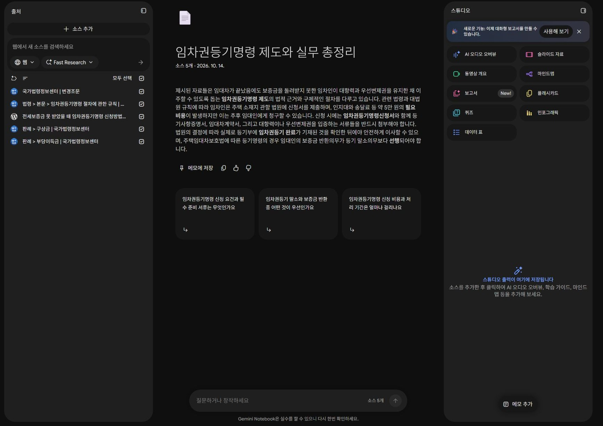

HUG 교육 · 3회차 / RAG
RAG로 만드는 근거 있는 답변
문서 준비부터 검색·생성·검증까지. NotebookLM으로 관찰하고, 내부망에서 구현할 구조를 설계합니다.
자료를 고르고
근거를 확인합니다.
RAG에서 업무 지침·테스트까지 이어갑니다
공개 근거를 찾는 데서 멈추지 않습니다. 복합 업무 요구서를 분석하고 12개 절의 지침 v1을 자기 AI로 작성합니다. 실제 문의 시험 → 원문 대조 → v2 개정 → 같은 입력 재시험 → 처음 보는 검증으로 연결합니다. 결과물은 지침 전문·실제 출력·판정 근거·운영 인계서입니다.
07 · 업무 지침 설계와 RAG 구축 · 08 · 정상·예외 시험과 지침 개정
업무 지침·테스트 실습 14개 파일 ZIP ↓역할이 다른 노트북 3개, 각각 소스 45개
하나의 거대한 노트북에 모두 넣기 전에 업무별 검색 범위를 나눕니다. 법령·판례·HUG 공개 안내 고유 문서 84개를 선별해, 공통 자료를 포함한 총 135개 배치로 구성했습니다. 같은 법령을 여러 조각으로 나누어 개수를 늘리지 않았습니다.
NOTEBOOK A
직원용 지식검색
원문 TXT 45개
목록 CSV · 역할 지시문 · 실습 질문 · 기록지
ZIP 0.64 MB
NOTEBOOK B
민원 답변 지원
원문 TXT 45개
목록 CSV · 역할 지시문 · 실습 질문 · 기록지
ZIP 0.55 MB
NOTEBOOK C
서류 검토 지원
원문 TXT 45개
목록 CSV · 역할 지시문 · 실습 질문 · 기록지
ZIP 0.67 MB
RAG를 이해하고, 업무 적용을 설계합니다.
- 원리 이해검색과 생성을 구분하고, 어떤 근거가 답변에 들어가는지 설명합니다.
- 도구로 관찰NotebookLM에서 자료 선택·질문·인용을 바꾸며 오류를 확인합니다.
- 구축 설계내부망의 문서·검색·모델·권한·평가를 연결한 초안을 작성합니다.
전체 구조부터 보세요.
준비할 때 · 문서를 검색 가능한 상태로 만들기
- 수집·추출파일 / OCR / 표
- 청킹·메타데이터조문 / 시행일 / 권한
- 색인키워드 / 벡터
질문할 때 · 근거를 찾아 답변에 연결하기
- 질문·권한 확인사용자 / 업무 조건
- 검색·재정렬관련 조각 / 적용 범위
- 근거 전달·생성질문 + 근거 + 지시
- 인용·검증원문 위치 / 확인 필요
6시간 · 360분 수업 흐름
13시 시작을 유지한 편성안입니다. 휴식 20분을 포함하며, 실제 교육 운영 시간은 기관 편성에 맞춰 확정합니다.
| 시간 | 핵심 내용 | 완료할 행동 |
|---|---|---|
| 13:00–13:15 | 복습·준비 · 15분 | 접속과 자료 받기 |
| 13:15–13:50 | RAG 이론 · 35분 | 준비/질문 경로와 검색/생성 구분 |
| 13:50–14:45 | 역할별 노트북 준비 · 55분 | A/B/C 각 45개 등록·핵심 5개/전체 45개 비교 |
| 14:45–14:55 | 휴식 · 10분 | |
| 14:55–15:55 | 실습A · 지식검색 · 60분 | A 지식검색·상품/법령/판례 비교·인용 대조 |
| 15:55–16:40 | 실습B · 민원 답변 · 45분 | 사실과 근거 분리·초안 오류 수정·재사용 |
| 16:40–16:50 | 휴식 · 10분 | |
| 16:50–17:35 | 실습C · 서류 점검 · 45분 | 기준/추출/규칙검사 구분·원본 대조 |
| 17:35–18:05 | 업무 지침 설계·시범 · 30분 | 요구서 분석·12절 지침v1·실제1건시범 |
| 18:05–18:30 | 테스트·지침 개정 · 25분 | 실제출력 대조·v2개정·재시험·새검증 |
| 18:30–19:00 | 동료 검토·발표·정리 · 30분 | 지침·시험 검토·운영인계·업무 후보3개 |
설명만 듣지 않고 기록을 남깁니다.
| 활동 | 개인·조별 결과물 |
|---|---|
| 자기 AI 실습 | 노트북 3개 등록 확인 + 5개/45개 비교 기록 |
| NotebookLM A/B/C | 인용 비교표 + 수정한 민원 초안 + 제출목록 점검표 |
| 구축·평가 | 업무 분석표 + 지침v1/v2 + 실제시험·재시험 + 운영인계서 |
| 동료 검토 | 실패 근거·개정 이유·정상회귀 + 90초 발표 메모 |
교재에서 자료와 질문을 받고, 각자의 AI에서 직접 실행합니다. 별도 기록지에 자신의 실제 응답과 원문 대조 결과를 남깁니다. 서버 설치는 이 수업에 포함하지 않으며, 학습자 활동 시간을 포함한 운영안입니다. 실제 소요시간과 동시 실습은 교육 계정 리허설에서 확인해야 합니다.
실제 자료와 실제 실행을 연결합니다.


계정 영역을 잘랐습니다. 확대하면 원본 크기로 읽을 수 있습니다.
AX 과제에 적용하는 위치
| 과제 | RAG의 역할 | 함께 필요한 기능 |
|---|---|---|
| 5 · 직원용 지식검색 | 규정·매뉴얼 근거 검색과 답변 | 시행일·부서 권한·원문 인용 |
| 7 · 지능형 민원처리 | 유사 문의와 답변 기준 검색 | 개인정보 처리·사실 확인·담당자 검토 |
| 8 · 고객지원 챗봇 | 공개 가능한 기준으로 안내 생성 | 공개 범위 제한·상담 이관 |
| 6 · 서류 자동검토 | 검토 기준 검색 | OCR·정보 추출·명시적 규칙검사·실물 검토 |